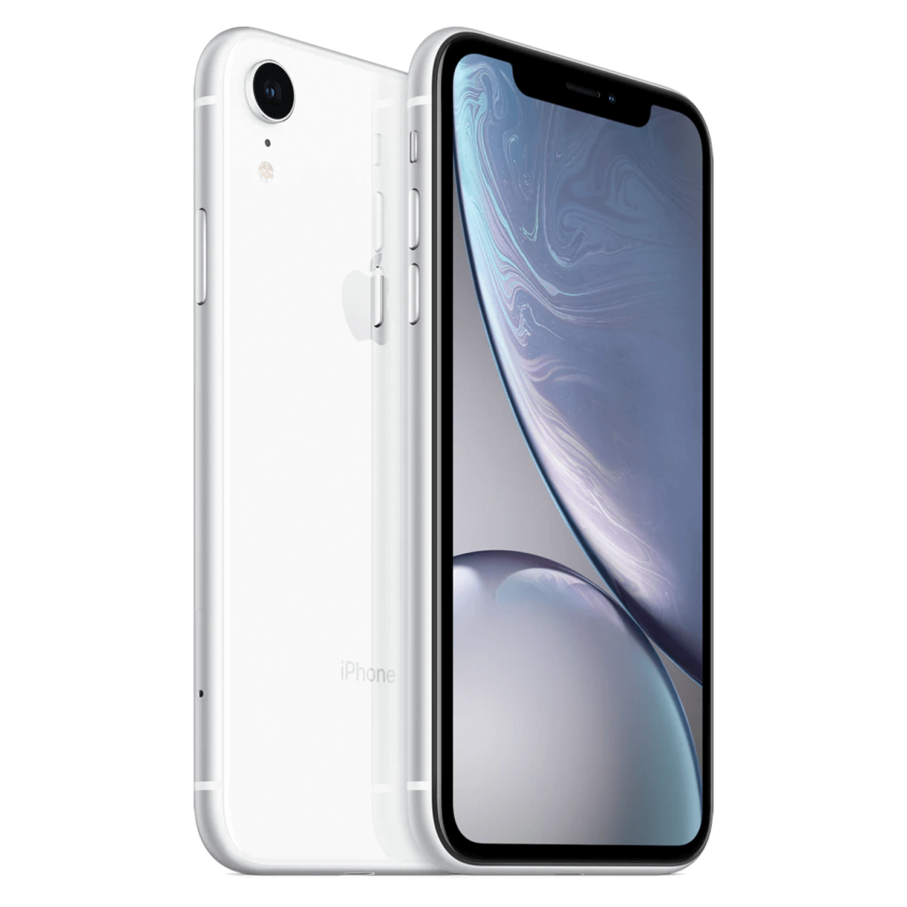

Apple apresenta o iPhone XR
Ele vem com chip A12 Bionic, tela Liquid Retina de 6,1 polegadas, design em vidro e alumínio, Face ID e sistema de câmera inovador. O iPhone XR está disponível em seis lindas cores.
O iPhone XR nos ajuda a levar as inovações mais recentes do iPhone para uma quantidade ainda maior de pessoas. Ele vem com tecnologias inovadoras.
O Apple iPhone XR é um smartphone iOS de bom nível, ótimo para fotos, que pode satisfazer até o mais exigente dos usuários. Tem uma enorme tela Touchscreen de 6.1 polegadas com uma resolução de 1792x828 pixel que não é das mais elevadas. Sobre as características deste Apple iPhone XR na verdade não falta nada. Começando pelo LTE 4G que permite a transferência de dados e excelente navegação na internet, além de conectividade Wi-fi e GPS. Tem também leitor multimídia, videoconferência e bluetooth. Enfatizamos a boa memória interna de 256 GB mas sem a possibilidade de expansão.